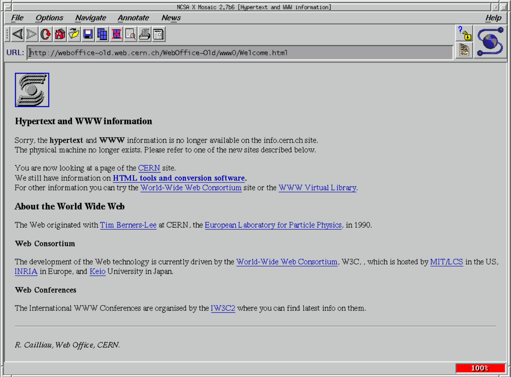

El navegador Mosaic o NCSA Mosaic fue el primer navegador web gráfico disponible para visualizar páginas web en sistemas operativos como Mac, Windows u otros.
Este navegador web fue creado en enero de 1993, en el National Center for Supercomputing Applications (NCSA), por Marc Andreessen (que desarrolló parte del código,
con la posibilidad de acceso a páginas en disco mediante protocolo file://) y Eric Bina.
La primera versión (v1.0) funcionaba sobre sistemas Unix y fue liberada el 22 de abril de 1993, y
fue tal su éxito que en agosto de 1993 se crearon versiones para Microsoft Windows y Macintosh.
